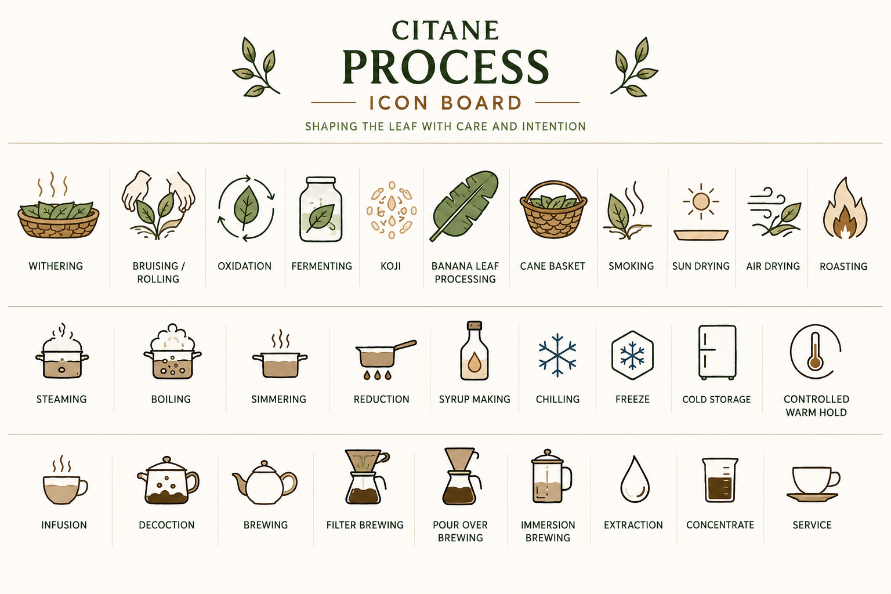

Reference image — Citane Process Icon Board. Row 1: Leaf Processing. Row 2: Thermal Transformation. Row 3: Brewing Preparation.

Controlled reduction of moisture in freshly harvested leaf, through spreading in shade with airflow. Withering softens the leaf physically — making it pliable for subsequent steps — and begins enzymatic activity that influences flavour development. Duration and conditions are critical variables.
See Process — Shaping the Leaf →
Physically breaking or compressing leaf cell walls to release juices, initiate oxidation, and begin building flavour complexity. The degree of bruising directly controls the intensity and character of oxidation that follows. May be done by hand or machine.

Shaping the leaf through mechanical or hand pressure — defining its final form, density, and surface area for extraction. Rolling under heat during thermal processing allows cell alignment to be fixed as the leaf dries into its finished shape.

The controlled exposure of leaf cell contents to oxygen following bruising — a biochemical process that transforms colour, aroma, and flavour. Oxidation is not spoilage; it is a deliberate transformation. The degree is a processing decision that defines the cup character of the finished leaf.

Microbial activity — bacteria, yeast, or fungi — that transforms the leaf's chemical profile over time. Fermentation adds complexity and can create unique flavour signatures. It requires close monitoring: the difference between controlled fermentation and spoilage is temperature, time, and hygiene.

A woven vessel used in traditional Buna processing and preparation — particularly documented in Ethiopian Chemo and Engere traditions. The basket allows airflow and may contribute subtle character to the contents. In some traditions it serves as both processing container and brewing vessel.
See Chemo tradition →
Drying the leaf under a canopy or in a shaded structure — slower than sun drying and gentler on volatile aromatics. Shade drying is preferred where colour retention and aromatic delicacy are priorities. Requires good ventilation and low humidity to prevent mould.

Reducing leaf moisture by exposure to direct sunlight on raised beds or clean surfaces. Low-cost and effective but weather-dependent. Rate of drying, ambient temperature, and depth of leaf spread all influence the final moisture content and character of the dried leaf.

Drying the leaf in ambient air without direct sun or artificial heat. The slowest drying method — and the most gentle. Used where preserving the leaf's natural volatile character is the priority. Dependent on low ambient humidity for safe drying without mould risk.

Removing stems, impurities, broken material, and off-grade leaf to produce a clean, consistent batch. Sorting is a quality gate — the point at which physical quality is assessed and non-conforming material is separated. Hand sorting allows the most precise control.
See Process — Sorting →Applying moist heat via steam to soften the leaf, deactivate enzymes, and fix colour — preserving chlorophyll and preventing oxidation. Locks in a greener, fresher flavour profile. Time and temperature are tightly controlled.
See Thermal Transformation →Immersing leaf in boiling water as part of a decoction preparation. A documented feature of Ethiopian coffee leaf traditions — particularly Engere — where leaves are boiled with milk and sometimes spices. Extended boiling increases sweetness and decreases bitterness in coffee leaf.
See Engere →Sustained heat below boiling point — gentler and more controlled than a full boil. Allows time for compound release without aggressive agitation. Used in both traditional preparations and modern culinary applications of Buna leaf.
Continuing to apply heat to a liquid extraction until volume decreases through evaporation, concentrating flavour and compounds. Used in culinary Buna applications — sauces, glazes, concentrated bases — where an intensified leaf character is the target.
See Buna Culinary →Combining a concentrated Buna extraction with sugar and applying heat to create a shelf-stable syrup. Used as a flavour component in beverages, desserts, and savoury preparations. The leaf's sweetness and aromatic character are preserved in syrup form.
Rapidly reducing temperature after brewing or processing to halt extraction, fix flavour, and prepare for cold service or storage. Rapid chilling after hot extraction preserves aromatic volatiles that would otherwise dissipate slowly. Freezing extends shelf life of prepared extractions.
Holding processed leaf or prepared extractions at refrigeration temperature to slow degradation and extend quality life. Dried leaf does not require cold storage if moisture is correctly managed; prepared extractions do. Cold storage is a quality decision, not a default.
Maintaining a prepared Buna brew at a specific elevated temperature for service. Relevant for decoction-style preparations served over extended periods. Temperature and duration must be defined to prevent continued extraction or quality loss.
Steeping leaf in hot water for a defined period, then separating leaf from liquid. The most accessible Buna brewing method. Variables: water temperature, steep time, leaf-to-water ratio, and leaf form.
Boiling leaf directly in water or milk for an extended period. The traditional preparation in Engere and Kuti traditions. Extended heat in decoction increases sweetness and decreases bitterness in coffee leaf — opposite to what extended heat does in tea.
See Engere →Passing hot water through a bed of leaf material in a paper or metal filter. Produces a clean, bright extraction with solids removed. Grind consistency and water distribution over the bed are the primary variables.
A subset of filter brewing where water is poured manually over the leaf bed in a controlled pattern. Gives the brewer precise control through water temperature, pour speed, and pour pattern. Used for careful, cup-by-cup brewing.
Submerging leaf material fully in water for the entire extraction period, then separating. Extracts more evenly across the bed than percolation methods, producing a fuller-bodied result with less variance.
The process by which water dissolves and carries soluble compounds from the leaf into the liquid. The central concept of all brewing. Under-extraction leaves desirable compounds in the leaf; over-extraction pulls harsh compounds. The goal is the optimal range.
A highly extracted Buna preparation designed to be diluted before serving or used as a culinary ingredient. Concentrates allow efficiency — brewed once, stored, and deployed across multiple formats.
The presentation of Buna to the person who will drink it — in the right vessel, at the right temperature, with the right context. Service is the final expression of everything that came before. How Buna is served communicates what it is.